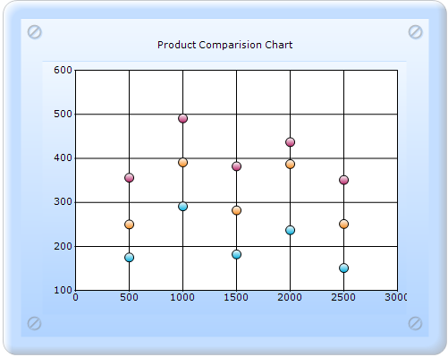

To create a Scatter chart through ChartModel:
1. In Controller, create an instance of MVCChartModel.
2. Create an instance of ChartSeries, and set the SeriesType to Scatter.
3. Set the ChartSeries, ChartArea, and ChartModel properties.
4. Return view to the corresponding View page after setting the ChartModel to the ViewData.
|
[C#] public ActionResult SimpleChart() { string accessFileLocation = Server.MapPath("."); accessFileLocation += @"\Content\Bubble.png"; System.Drawing.Bitmap flower = new System.Drawing.Bitmap(accessFileLocation); MVCChartModel chartModel = new MVCChartModel(); // Creating chart series and adding data points to it.
ChartSeries series1 = new ChartSeries("Technology AAA", ChartSeriesType.Scatter);
series1.Points.Add(500, 356, 3); series1.Points.Add(1000, 491, 4); series1.Points.Add(1500, 382, 3); series1.Points.Add(2000, 437, 3); series1.Points.Add(2500, 351, 4); series1.ScatterConnectType = ScatterConnectType.None; series1.ScatterSplineTension = 0; series1.ConfigItems.BubbleItem.BubbleType = ChartBubbleType.Circle;
// Adding Chart Series to the Chart Model chartModel.Series.Add(series1);
ChartSeries series2 = new ChartSeries("Technology BBB", ChartSeriesType.Scatter);
series2.Points.Add(500, 175, 4); series2.Points.Add(1000, 291, 3); series2.Points.Add(1500, 182, 2); series2.Points.Add(2000, 237, 4); series2.Points.Add(2500, 151, 4); series2.ScatterConnectType = ScatterConnectType.None; series2.ScatterSplineTension = 0; series2.ConfigItems.BubbleItem.BubbleType = ChartBubbleType.Circle;
// Adding Chart Series to the Chart Model chartModel.Series.Add(series2);
ChartSeries series3 = new ChartSeries("Technology CCC", ChartSeriesType.Scatter);
series3.Points.Add(500, 250, 5); series3.Points.Add(1000, 391, 2); series3.Points.Add(1500, 282, 4); series3.Points.Add(2000, 387, 2); series3.Points.Add(2500, 251, 4);
series3.ScatterConnectType = ScatterConnectType.None; series3.ScatterSplineTension = 0; series3.ConfigItems.BubbleItem.BubbleType = ChartBubbleType.Circle;
// Adding Chart Series to the Chart Model chartModel.Series.Add(series3); chartModel.Series[2].Style.Images = new ChartImageCollection(); chartModel.Series[2].Style.Images.Add(flower);
chartModel.Skins = ChartModelSkins.Office2007Blue; chartModel.ChartSeriesSkins = ChartSeriesSkins.Analog; chartModel.SmoothingMode = System.Drawing.Drawing2D.SmoothingMode.AntiAlias; chartModel.BorderAppearance.SkinStyle = ChartBorderSkinStyle.Pinned;
chartModel.Text = "Product Comparision Chart";
chartModel.Size = new System.Drawing.Size(500, 400); ViewData.Model = chartModel;
return View(); }
|
5. In the View page, invoke the ChartBuilder by using the control ID as the first argument, and convert the ViewData to MVCChartModel and set it as the second argument.
|
View[ASPX]
<%= Html.Chart("SimpleChart",(MVCChartModel)ViewData.Model) %> |
|
View[cshtml] @(new HtmlString(Html.Chart("SimpleChart",(MVCChartModel)ViewData.Model).ToString()))
|
6. Build and run the code, to get the following output:

Figure 122: Chart displaying Scatter chart Series